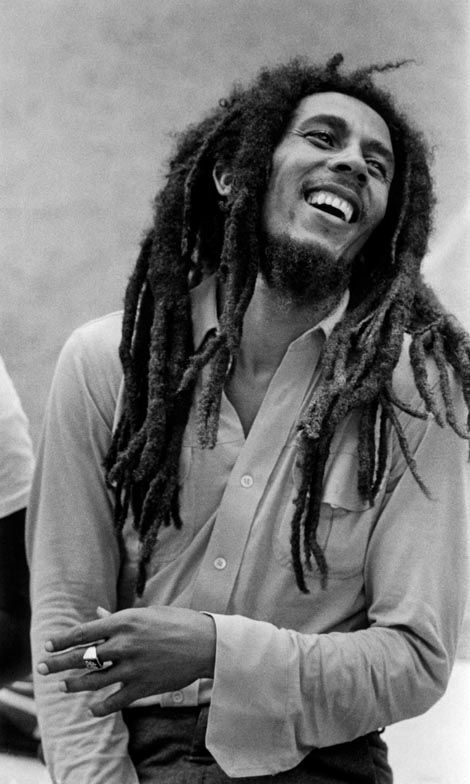

Redemption Song - Bob Marley

“Redemption Song” é uma das músicas mais marcantes de Bob Marley,
lançada
em 1980.
Diferente do reggae tradicional, ela é só voz e violão, mostrando um tom mais íntimo e reflexivo.
A letra fala sobre libertação física e mental, inspirada nas ideias de Marcus Garvey.
Marley, já doente
na época, expressa uma mensagem de esperança e resistência, pedindo que as pessoas se libertem das
correntes
da opressão.
É considerada um hino de liberdade e consciência negra, e também uma despedida
espiritual
de Marley ao mundo.